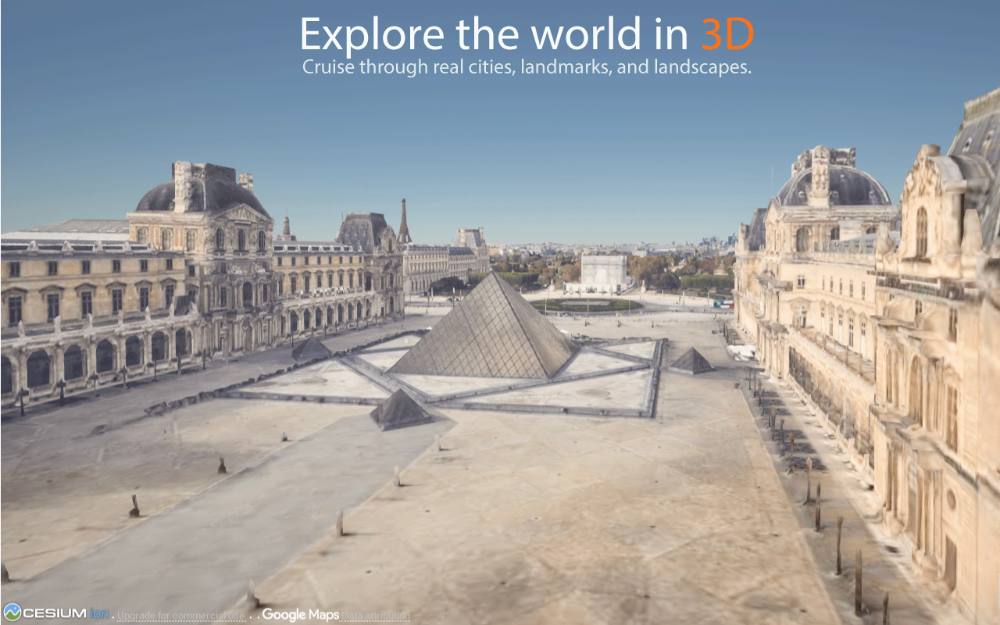
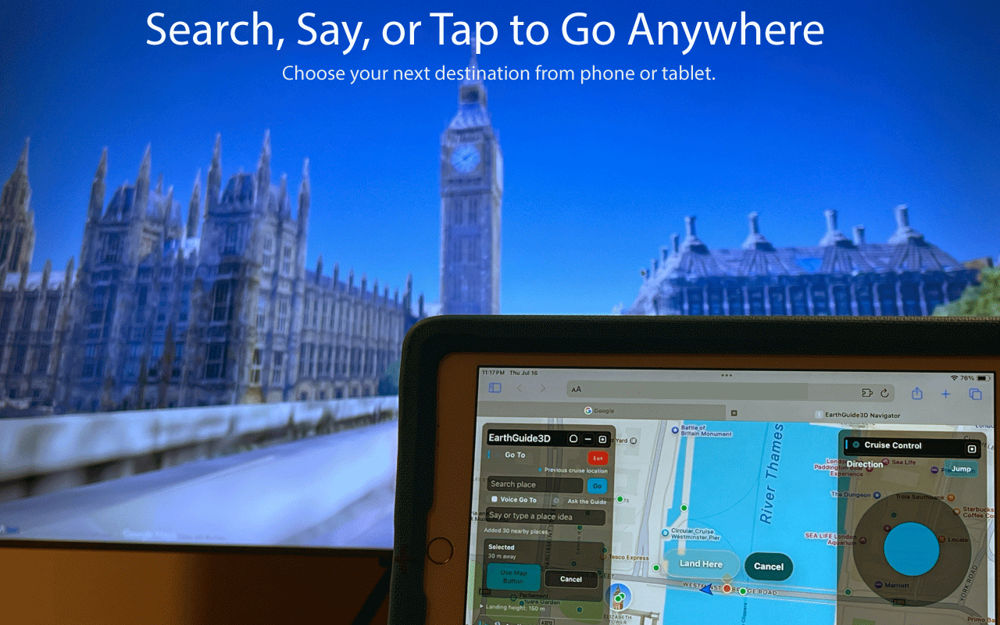
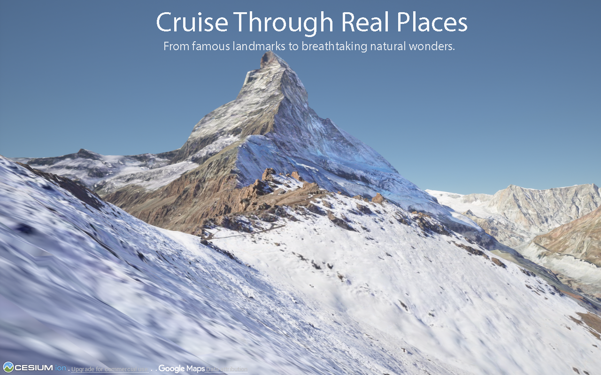
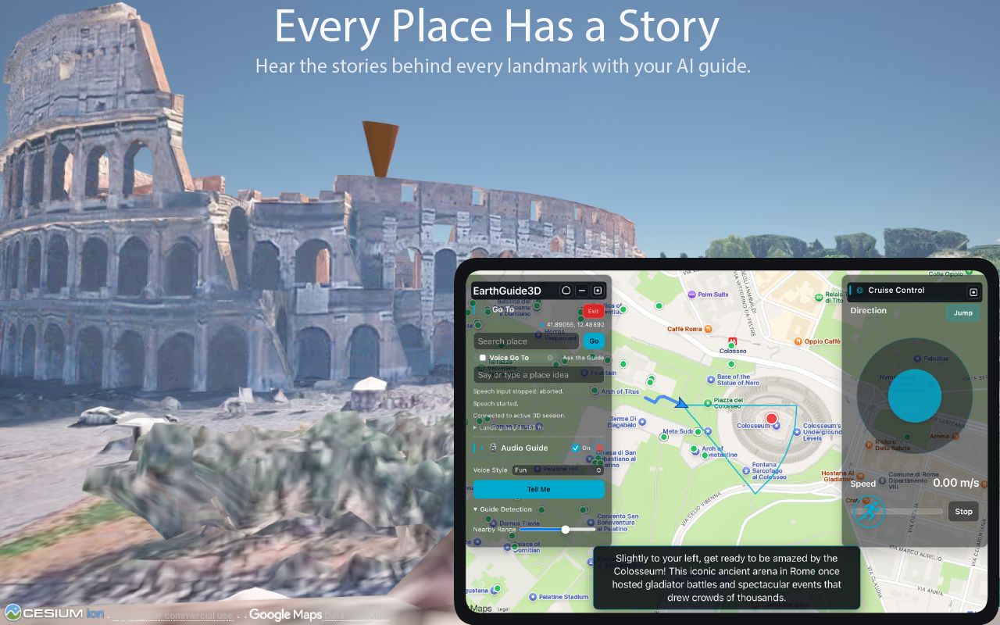
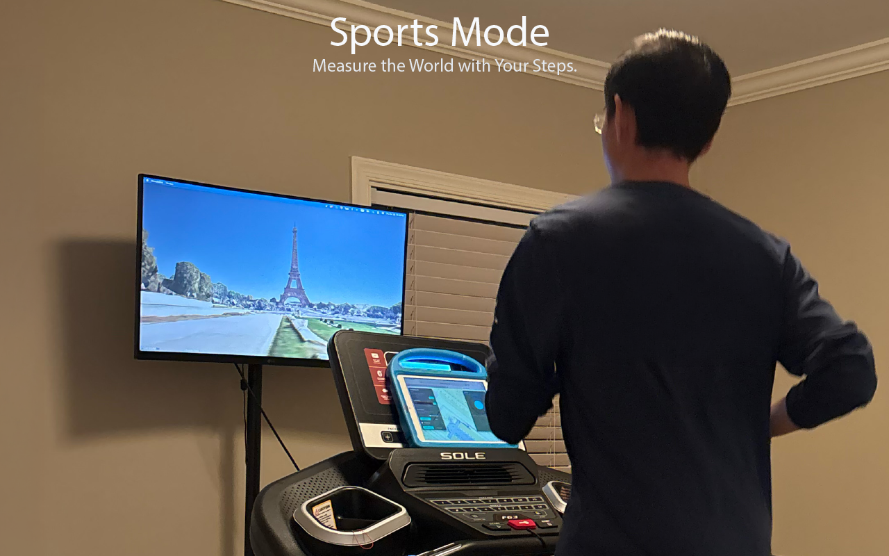
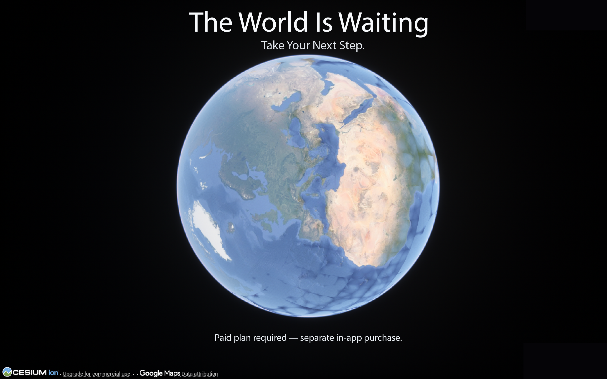

Explore the World in 3D
Move through real places in a detailed, immersive 3D environment on your Mac.
Now on the Mac App Store
Explore the world in immersive 3D.
Search, speak, or tap to travel anywhere. Discover every place with an AI guide. Measure the world with your steps.

Step into cities, landmarks, and landscapes on the Mac’s full-screen 3D world.
Explore Paris in 3DGo farther
EarthGuide3D makes the globe feel close at hand—whether you are planning a trip, taking a walk, or setting out for a workout.
Move through real places in a detailed, immersive 3D environment on your Mac.
Find a place with text, voice, or a point on the map, then make it your next landing spot.
Use natural controls to move through streets and landscapes instead of following a fixed route.
Invite an AI guide to add context and narration about the places around you as you travel.
Turn your movement into a way to measure the world and make every session feel like a journey.
Choose the destinations, pace, and mode that make the experience your own.
A closer look
The 3D world stays front and center on your Mac while the companion controller keeps the next move within reach.





Made to move
EarthGuide3D displays the immersive 3D world on your Mac. Your phone or tablet becomes a wireless controller, so you can search, select places, and guide the journey without crowding the view.
Getting started
Watch the guide to see how the Mac app and your phone or tablet controller work together.
EarthGuide3D runs on your Mac; use your phone or tablet as the controller.
EarthGuide3D for Mac
EarthGuide3D is available on the Mac App Store. Download it to begin exploring real places in immersive 3D.